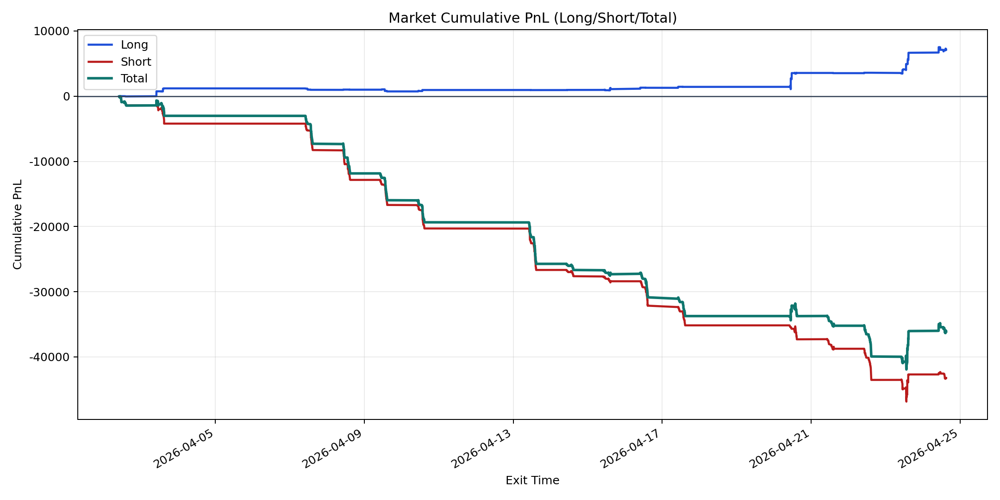
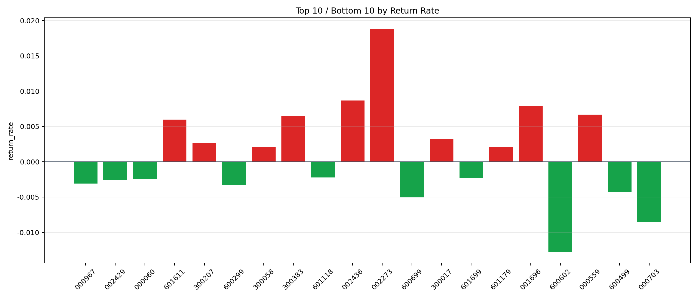

| repo_root | /home/haoranyou/data/output/alpha0.4_1w_5s_3ticks_index_filter/index_weights_500 |
|---|---|
| period_months | 1 |
| period_label | 2026-04-02_to_2026-04-24 |
| start_time | 2026-04-02 10:06:07 |
| end_time | 2026-04-24 14:59:55 |
| n_trades | 3505 |
| n_symbols | 54 |
| total_pnl | -36096.84165000005 |
| long_total_pnl | 7135.95584999999 |
| short_total_pnl | -43232.797500000044 |
| total_entry_notional | 33255445.0 |
| long_entry_notional | 3670616.0 |
| short_entry_notional | 29584829.0 |
| total_return_rate | -0.0010854415464896065 |
| long_return_rate | 0.0019440758308687126 |
| short_return_rate | -0.001461316457161204 |
| top_symbols_by_return | ["002273", "002436", "001696", "000559", "300383", "601611", "300017", "300207", "601179", "300058"] |
| bottom_symbols_by_return | ["600602", "000703", "600699", "600499", "600299", "000967", "002429", "000060", "601699", "601118"] |

